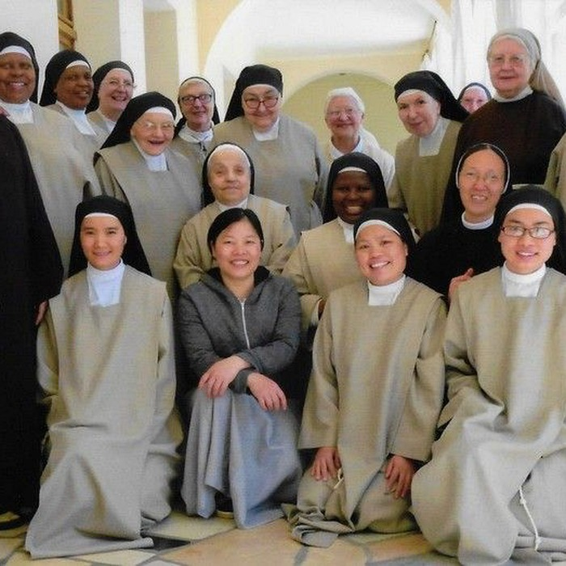

Fondazione Mano Amica · Italia — al fianco di chi ha più bisogno.

Sosteniamo le persone più vulnerabili con cibo, cure e dignità. Ogni intervento, grande o piccolo, diventa un gesto concreto.
La nostra missione
Un luogo sicuro per chi non ne ha uno: pasti caldi, ascolto, prima assistenza.
Accesso alle cure mediche di base per famiglie e persone in difficoltà.
Percorsi di formazione e reinserimento, perché ogni storia possa ripartire.
Testimonianze